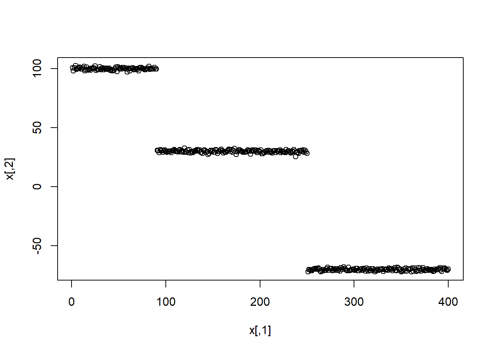

Indice_de_stabilite
Erica NIKIEMA
Générer la fonction par Simulation de trois(3) normales multivariées.
generfunction=function(moy,moy1,moy2,sd,sd1,sd2){
library(mvtnorm)
x1=rmvnorm(90,moy,sd)
x2=rmvnorm(160,moy1,sd1)
x3=rmvnorm(150,moy2,sd2)
x=rbind(x1,x2,x3)
x=cbind(c(1:400),x)
return(x)
}Classification
classifKmeans=function(x,k){
library(stats)
classes=kmeans(x[,-1],k)
classif=cbind.data.frame(x,as.factor(classes$cluster))
return(classif)
}Tirer un échantillon des données initiales
echantillon_indice=function(x,nbre){
ech=sample(x[,1],nbre,replace = FALSE)
return(ech)
}
echantillon=function(x,ech){
donnee_tiree=x[which(x[,1]%in%ech),]
return(donnee_tiree)
}Comparer les deux partitions
compar_partition=function(x,k,nbre_echantillon,col_index,col_partition){
classification1=classifKmeans(x,k)
indice=echantillon_indice(x,nbre_echantillon)
echantillon_0=echantillon(x,indice)
classification2=classifKmeans(echantillon_0,k)
donnee=cbind(x,classification1[,col_partition])
ajuste=donnee[which(donnee[,col_index]%in%indice),]
indice_rente=adjustedRandIndex(ajuste[,col_partition],classification2[,col_partition])
return(indice_rente)
}Répéter le processus n fois et comparer les différentes partitions
Repeter=function(comparaison_partition,n){
comparer=vector("numeric",n)
for(i in 1:n){comparer[i]=compar_partition(data,3,120,1,6)}
return(comparer)
}Application des fonctions
x=generfunction(c(100,10),c(30,1),c(-70,81),diag(c(1,1), ncol=2),diag(c(1,1) ,ncol=2),diag(c(1,1),ncol = 2))
plot(x)
Exemple avec la base Iris
data(iris)
plot(iris)
data=cbind(c(1:150),iris)
data=data[,-6]
compar1=compar_partition(data,3,120,1,6)
indice1=Repeter(compar1,100)
indice1## [1] 1.0000000 0.9505594 0.4516520 0.4381192 1.0000000 0.4382098 0.5641075
## [8] 1.0000000 0.9754248 1.0000000 0.9513588 0.9509438 0.4498534 1.0000000
## [15] 1.0000000 0.4134823 1.0000000 0.9760933 1.0000000 1.0000000 0.9525424
## [22] 0.4519874 0.9745043 0.4221696 0.8662761 0.9761940 0.9754248 0.9753611
## [29] 0.4400407 1.0000000 0.4546277 0.6283591 0.9413020 0.9755474 0.4417691
## [36] 0.9756316 1.0000000 0.4532218 0.4262205 0.9744399 1.0000000 1.0000000
## [43] 0.9742458 1.0000000 0.7471543 0.9754047 1.0000000 0.4405954 0.8157931
## [50] 0.4455527 1.0000000 0.6152738 0.9514483 0.4200573 1.0000000 1.0000000
## [57] 0.9743248 0.4358919 1.0000000 1.0000000 1.0000000 0.9754580 0.4415889
## [64] 0.9508786 0.9751010 0.9261613 0.9765047 1.0000000 0.9500446 1.0000000
## [71] 0.6152738 0.9740825 0.9765805 0.9762035 0.4212701 0.9749204 1.0000000
## [78] 0.9752026 0.4439892 0.4149225 1.0000000 0.4223102 0.4350430 0.4438102
## [85] 0.9763738 0.9752717 0.4548503 0.4496927 0.9769639 1.0000000 0.4568232
## [92] 1.0000000 0.9748514 0.4621158 0.4143725 1.0000000 0.4618626 0.9751906
## [99] 1.0000000 0.9752026mean(indice1)## [1] 0.8048408